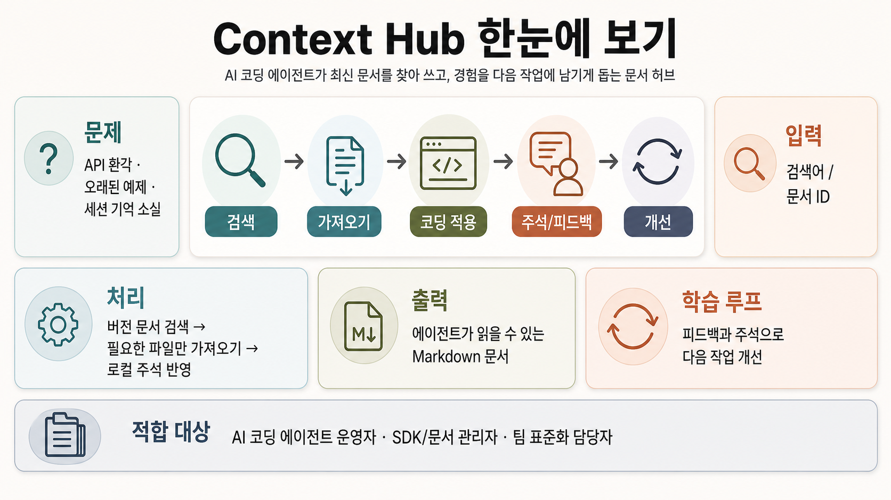

GitHub Repo Infographic Report
Context Hub는
에이전트용 문서 기억장치입니다
andrewyng/context-hub는 코딩 에이전트가 API를 추측하지 않고, 버전이 붙은 Markdown 문서를 검색·가져와 작업에 쓰도록 돕는 CLI/문서 허브입니다.
추천 판단: AI 코딩 워크플로우를 운영한다면 샘플로 테스트해볼 가치가 큼13,826Stars
1,203Forks
JavaScriptPrimary language
MIT LicenseLicense
v0.1.4Latest release
20Open issues